Beim Einsatz von Zweiwegebaggern bestehen Gefährdungen durch Zugfahrten, elektrische Gefährdungen durch unter Spannung stehende Teile der Fahrleitungsanlagen bei elektrisch betriebenen Bahnen (DB: Ril 824.0106 [29]), durch die Fahrbewegung des Baggers und durch den Einsatz auf dem Schienenfahrwerk.
Gemäß der Regel „Betreiben von Arbeitsmitteln“ (BGR / GUV-R 500) [17] muss der Maschinenführer wie jeder Erdbaumaschinenführer mindestens 18 Jahre alt, körperlich und geistig geeignet, im Führen der Maschine unterwiesen, vom Unternehmer beauftragt und zuverlässig sein. Für Zweiwegebaggerfahrer gelten die Qualifikationsanforderungen der Triebfahrzeugführerscheinverordnung bzgl. Eignung, Tauglichkeit, Mindestalter, Fachkenntnissen [8], [24].
In der Umgebung des Zweiwegebaggers, in der Gefährdungen durch die Maschine bestehen, dürfen sich Personen nicht aufhalten. Der Zweiwegebagger darf nur bewegt werden, wenn dieser Gefahrbereich frei von Personen ist. Müssen sich Beschäftigte ausnahmsweise arbeitsbedingt im Gefahrbereich aufhalten, muss Sichtkontakt zum Maschinenführer bestehen, Abb. 7-1. Der Maschinenführer darf die Zustimmung zum Betreten des Gefahrbereichs nur erteilen, wenn die Maschine nicht bewegt wird.
Durch fehlende Abstimmung oder Missverständnisse kommt es immer wieder zu Unfällen, bei denen Beschäftigte von der Arbeitsausrüstung des Zweiwegebaggers erfasst oder angefahren werden. Bei Vorwärtsfahrt auf Gleis- oder Straßenfahrwerk sind Personen vor dem rechten vorderen Zwillings- bzw. Schienenrad besonders gefährdet, da der Maschinenführer diesen Bereich wegen der Sichtbehinderung durch den Ausleger schlecht einsehen kann, Abb. 7-2. Der Aufsichtführende sollte die Arbeitsbereiche des Zweiwegebaggers und der Kolonne soweit wie möglich räumlich trennen.
Mitgänger sind beim Führen von Lasten auch bei Vorwärtsfahrt des Baggers besonders gefährdet – auch durch die Stolpergefahr im nicht eingeschotterten Gleis. Das Führen von am Bagger angeschlagenen Lasten (z. B. Schienenstücke, Weichenteile, Schwellen) durch Mitgänger sollte soweit möglich vermieden werden, um die Gefahr auszuschließen, dass der Mitgänger vom Zweiwegebagger erfasst und überrollt wird. Als Transportmittel haben sich vom Zweiwegebagger gezogene oder geschobene Bahnwagen bewährt, Abb. 7-3. Wenn ausnahmsweise Mitgänger zum Führen der Last eingesetzt werden müssen, dürfen diese nicht zwischen Last und Baggerunterwagen gehen und sollten wenn möglich außerhalb des Gleises und nicht im Gefahrenbereich des Nachbargleises gehen.
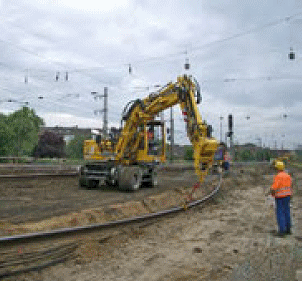
| Abb. 7-1: | Anschläger im Sichtbereich des Maschinenführers. Warnkleidung ist geschlossen zu tragen. |
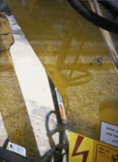
| Abb. 7-2: | Sichtbehinderung nach vorne rechts durch den Ausleger des Zweiwegebaggers. |
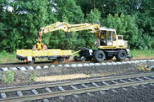
| Abb. 7-3: | Bei Transporten mit dem Zweiwegebagger sollten Bahnwagen eingesetzt werden, um auf Mitgänger zum Führen angeschlagener Lasten verzichten zu können. |
Bei Rückwärtsfahrten von Zweiwegebaggern besteht ein hohes Risiko, dass Personen überfahren werden, die sich im Nahbereich hinter dem Bagger aufhalten. Dieses Risiko resultiert aus den gleisbauspezifischen Arbeitsbedingungen:
Wegen der hohen Gefährdung bei Rückwärtsfahrt müssen Zweiwegebagger – auch Mietgeräte – mit Kamera-Monitor-Systemen zur Rückraumüberwachung ausgerüstet sein, Abb. 7-6. Die Betriebssicherheitsverordnung [2] fordert im Anhang 1, 3.1.6 d) „Hilfsvorrichtungen zur Verbesserung der Sicht“. Gleisbauunternehmen berichten über gute Erfahrungen mit Rückraumkameras auch bei Nacht. Bei Montage der Kamera auf dem Oberwagen ist das rückwärtige Unterwagenende (Schienenachse) im Monitor sichtbar. Das Kuppeln von Waggons wird erleichtert, das Eingleisen ist möglich, ohne den Oberwagen zu drehen, Fahrwegunterbrechungen (ausgebaute Schienen) können sicher erkannt werden. Für Neugeräte schreibt das Eisenbahn–Bundesamt seit 1.11.2007 die Ausrüstung mit Kamera–Monitor–Systemen verbindlich vor. Zweiwegebagger, die auf Gleisen der DB eingesetzt werden, müssen mit Rückraumüberwachungssystemen ausgerüstet sein und dürfen sich bei Versetzbewegungen nach rückwärts mit max. 5 km/h bewegen (Modul 132.0118A09 [25]).
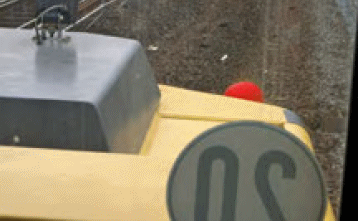
| Abb. 7-4: | Sicht des Baggerführers aus dem rückseitigen Kabinenfenster auf einen Beschäftigten, der etwa 0,5 m hinter dem Bagger steht: nur ein Teil des Schutzhelms ist sichtbar. |
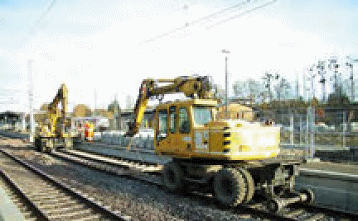
| Abb. 7-5: | Transport eines Gleisjochs: die Rückwärtsfahrt ist unvermeidbar. |
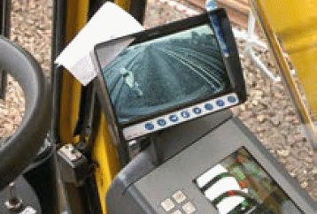
| Abb. 7-6: | Sicht durch die Kamera am Oberwagenheck auf den Beschäftigten in gleicher Position wie Abb. 7-4. |
Kamera-Monitor-Systeme sollen bei Zweiwegebaggern ausschließlich zur Überwachung des Nahbereichs hinter dem Bagger eingesetzt werden und dürfen nicht zur Signalerkennung verwendet werden. Soweit möglich und stets für längere Strecken muss der Oberwagen in Fahrtrichtung gedreht werden. Die Rückraumüberwachung ist bei Zweiwegebaggern heute Standardausrüstung. Die Kamera kann in das Oberwagenheck integriert und damit vor Beschädigungen und Diebstahl optimal geschützt angeordnet werden, Abb. 7-7.
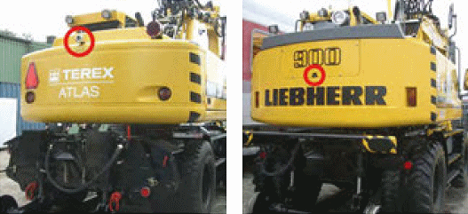
| Abb. 7-7: | Die Rückraumüberwachung ist für Zweiwegebagger Standard (rechts: Kamera in den Oberwagen integriert). |
Fußverletzungen durch Einquetschen am Schienenrad bilden einen weiteren Unfallschwerpunkt bei Zweiwegebaggern, Abb. 7-8. Beschäftigte treten häufig ohne Absprache mit dem Maschinenführer zwischen Schienenachse und Unterwagen, um Werkzeug abzulegen und aufzunehmen oder Schlepperde, Kupplungsstange oder Luftschläuche für Wagen anzuschließen. Die kleinste Versetzbewegung des Baggers kann dann zu schweren Fußverletzungen führen. Auch hier gilt: Kein Zutritt in diesen Bereich, ohne vorher die Zustimmung des Maschinenführers eingeholt zu haben.
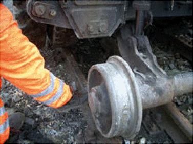
| Abb. 7-8: | Quetschgefahr zwischen Unterwagen und Schienenachse. |
Auf ausgedehnten Gleisbaustellen ist immer wieder festzustellen, dass die Fahrer von Zweiwegebaggern Kollegen auf den Schienenachsen stehend oder auf dem Oberwagen sitzend mitnehmen, Abb. 7-9. Der Aufsichtführende darf ein solches Verhalten keinesfalls tolerieren. Schwerste Unfälle mit abgetrennten Gliedmaßen oder tödlichen Verletzungen können die Folge sein, wenn der Kollege abrutscht und überrollt wird. Für die Personenmitnahme ist nur der zweite Sitz in der Kabine zugelassen. Bauleiter und Schachtmeister sind dafür verantwortlich, dass geeignete Transportmittel (z. B. Kleinbus) bereitgestellt werden.
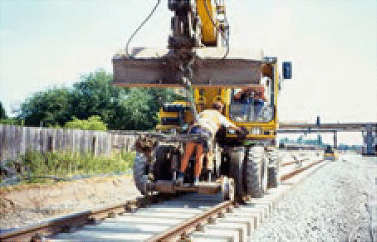
| Abb. 7-9: | Unzulässige Mitnahme eines Beschäftigten auf der Schienenachse des Zweiwegebaggers. |
Anbaugeräte an Zweiwegebaggern dürfen nur gemäß Bedienungsanleitung des Herstellers eingesetzt werden. Bei Anbaugeräten mit Schnellwechseleinrichtung muss auf die Arretierung der Verriegelung gemäß Herstellerangaben geachtet werden (Sichtprüfung, „Rüttelprobe“).
Zweiwegebagger müssen gemäß DIN EN 474-5 [35] für den Hebezeugeinsatz mit Anschlageinrichtung (z. B. Lasthaken mit Hakenfalle), optisch oder akustisch wirkender Lastmomentwarneinrichtung, Leitungsbruchsicherungen an den Auslegerzylindern und Traglasttabelle am Fahrerplatz ausgerüstet sein.
Beim Hebezeugeinsatz auf dem Gleisfahrwerk müssen schon in der Arbeitsvorbereitung die Faktoren berücksichtigt werden, die die Standsicherheit beeinflussen:
Der Bauleiter muss den Baggereinsatz so planen, dass der Maschinenführer die Einsatzgrenzen des Baggers gemäß Betriebsanleitung einhalten kann. Werden die o. g. Randbedingungen bei der Arbeitsvorbereitung nicht berücksichtigt, können Improvisation und Maschinenumsturz die Folge sein.
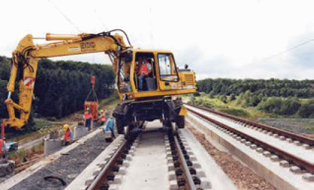
| Abb. 7-10: | Auf dem Gleisfahrwerk liegt die Kippkante des Baggers wesentlich weiter innen als auf dem Straßenfahrwerk. Die Gleisüberhöhung im Bogen verringert die Standsicherheit. |
Der Maschinenführer darf nur sicher angeschlagene Lasten bewegen. Schienenhebezangen ohne Öffnungssperre (Abb. 7-11) sind nicht zulässig, da sich die Schiene beim Anstoßen an Ladekanten von Waggons oder LKW oder beim Aufsetzen eines Schienenendes auf dem Boden lösen kann, ebenso bei gebogenen Schienen wegen der ausmittigen Schwerpunktlage. Schienenhebezangen müssen – z. B. handbediente – Öffnungssperren haben (vgl. [2] Anhang 1, 3.2.3).
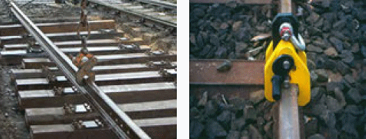
| Abb. 7-11: | Schienenhebezange ohne Öffnungssperre (links, nicht zulässig) und mit Öffnungssperre (rechts). |
Außen neben den Schienen angeordnete Gleismagnete für die induktive Zugsicherung (Indusi) überragen den Schienenkopf um einige cm. Bei Zweiwegebaggern ohne Reibradantrieb werden die Antriebs- und Bremskräfte für die Gleisfahrt über die vier inneren Reifen des Mobilfahrwerks auf den Schienenkopf übertragen. Beim Überfahren von Indusi-Gleismagneten besteht die Gefahr der Dejustierung bzw. Beschädigung durch die äußeren Reifen. Diese dürfen jedoch nicht demontiert werden, da die Standsicherheit des Baggers nicht beeinträchtigt werden darf – die vom Hersteller vorgesehenen Einsatzbedingungen müssen eingehalten werden.
Der Bagger muss auch beim Ein- und Ausgleisen und auf dem Weg zur Eingleisstelle standsicher sein, da oft wechselweise auf Schienen- und Straßenfahrwerk gearbeitet wird. Werden die äußeren Reifen demontiert, verschiebt sich die Kippkante bei Einsatz auf dem Straßenfahrwerk nach innen und die Verformung der verbliebenen vier Reifen vergrößert sich. Bei einer Entgleisung auf einem Baugleis mit ungünstigen Gleislageparametern oder bei Luftverlust auf einem inneren Reifen kann nur die vollständige Straßenbereifung einen Umsturz verhindern. Die vollständige Bereifung ist daher auch bei Schienenfahrt unverzichtbar. Gleisschaltmittel, wie z. B. Indusi- Gleismagnete, sind mit Hilfe der Aushebeeinrichtung des Baggers je nach Gleisneigung und Anhängelast in „Schwungfahrt“ (beide Achsen ausgehoben) oder durch „Klettern“ (mindestens eine Straßenfahrwerksachse hat immer Schienenkontakt) zu überfahren, Abb. 7-12. Dabei ist das Regelwerk des Bahnbetreibers zu beachten [32]. Um den Maschinenführern das Erkennen der Indusi-Gleismagnete zu erleichtern, können zusätzliche Zeichen eingesetzt werden (im Baugleis z. B. Leitkegel).
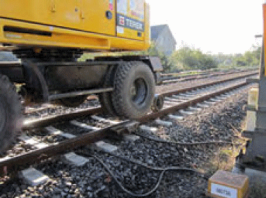
| Abb. 7-12: | Ausheben des Mobilfahrwerks am Indusi-Gleismagnet. |
Mit den Hydraulikzylindern an den Schienenachsen kann der Bagger so weit angehoben werden, dass sich die Mobilreifen einige cm über dem Schienenkopf befinden. Der Bagger rollt dann nur auf den Schienenachsen, Beschleunigen und Bremsen sind nicht möglich. Im ausgehobenen Zustand können z. B. Indusi-Gleismagnete passiert werden.
Aufgrund mehrerer Unfälle, bei denen das Mobilfahrwerk aus dem ausgehobenen Zustand heraus nicht mehr absenkbar und der Bagger nicht mehr bremsbar war, mussten alle Zweiwegebagger überprüft und ggf. so nachgerüstet werden, dass bei Ausfall des Antriebs oder des elektrischen Systems ein Absenken des Mobilfahrwerks aus dem ausgehobenen Zustand heraus und damit das Bremsen im Notfall möglich ist, Abb. 7-13.
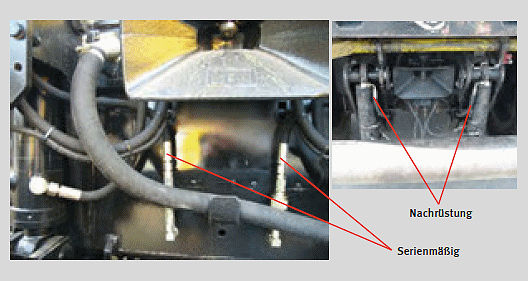
| Abb. 7-13: | Zusätzliche Hydraulikleitungen zu den Aushebezylindern, um den Bagger im Notfall auf die Starrachse des Mobilfahrwerks absenken zu können. |
Für das Bewegen von Waggons mit dem Zweiwegebagger (Abb. 7-14) sind die zulässigen Anhängelasten auf der Anschriftentafel der Maschine angegeben (Abb. 7-15). Für das Bewegen von Eisenbahnwagen – diese sind mit einer Luftbremsanlage ausgerüstet – muss auch im Baugleis ein Zweiwegebagger mit Eisenbahnwagenbremsanlage eingesetzt werden – dies ist Stand der Technik und damit nach dem Arbeitsschutzgesetz [1] zwingend erforderlich. Die Bremsanlagen der angehängten Waggons werden vom Bagger aus mit Luft versorgt und über das Führerbremsventil gesteuert. Die Luftschläuche aller Waggons müssen über die Hauptluftleitung miteinander verbunden sein. Für das Bewegen der Waggons dürfen nur vom Bahnbetreiber zugelassene Kuppelstangen verwendet werden, Abb. 7-16. Dabei muss die Höhendifferenz beachtet werden, bis zu der die Kuppelstange eingesetzt werden darf.
Beim Abstellen der Waggons sollen diese grundsätzlich mit Hemmschuhen gegen Abrollen gesichert werden (Abb. 7-17), da der Druckluftvorrat in abgestellten Waggons wegen der Undichtigkeiten der waggoneigenen Druckluftbremsanlage als Sicherung für ein längerfristiges Abstellen nicht ausreicht. Auch die Luftbremsanlagen von firmeneigenen Bahnwaggons sind regelmäßig zu prüfen, um ihre Funktionsfähigkeit sicherzustellen.
Gelegentlich werden auf Gleisbaustellen Container ohne feste Verbindung auf Schienenfahrwerke aufgesetzt und mit Zweiwegebaggern bewegt, Abb. 7.18. Derartige Konstruktionen sind keine „Schienenfahrzeuge“ und auch keine „gleisfahrbaren Geräte“ und wegen der Gefahren durch unkontrolliertes Abrollen, fehlende Standsicherheit sowie durch unzulässigen Einsatz der Kuppelstange auch im Baugleis nicht zugelassen.
Der Infrastrukturbetreiber entscheidet, ob er den Einsatz des Zw-Baggers mit „gleisfahrbaren Geräten“ im Baugleis zulässt (ungebremste Anhängelast des Zw-Baggers gemäß Anschriftentafel, Abb. 7-15: 40 t).
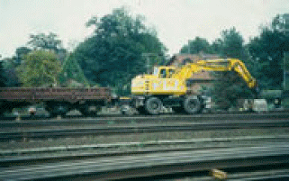
| Abb. 7-14: | Bewegen von Waggons mit dem Zweiwegebagger. |
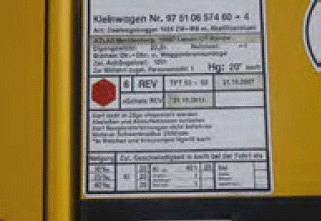
| Abb. 7-15: | Anschriftentafel am Zweiwegebagger. |
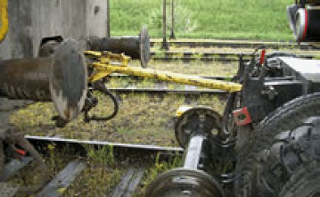
| Abb. 7-16: | Vom Bahnbetreiber zugelassene Kuppelstange. |
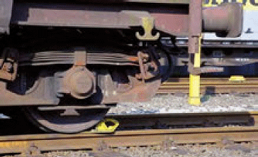
| Abb. 7-17: | Hemmschuhe sichern abgestellte Waggons gegen Wegrollen. |
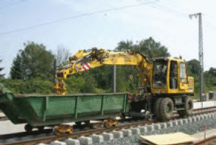
| Abb. 7-18: | Unzulässiger Einsatz eines Zweiwegebaggers zum Bewegen eines Containers auf Schienenfahrwerken. Container auf Schienenfahrwerken sind u. a. wegen Gefahren durch unkontrolliertes Abrollen, fehlende Standsicherheit auch im Baugleis nicht zugelassen. |
Für den Einsatz von Zweiwegebaggern in der Nähe von Betriebsgleisen muss bewertet werden, ob z. B. durch eine Fehlbedienung Teile der Maschine oder angeschlagene Lasten in das Profil hineingeraten können und dadurch eine Gefahr für den Bahnbetrieb entstehen kann. Vorgaben des Bahnbetreibers sind bei der DB in einer baustellenbezogenen Betriebs- und Bauanweisung (Betra) festgelegt.
Wird der Zweiwegebagger eingegleist neben einem nicht gesperrten Gleis eingesetzt (Abb. 7-19), wird das unbeabsichtigte Schwenken des Auslegers in dieses Gleis durch die Inbetriebnahme der Schwenkbegrenzung am Bagger ausgeschlossen, Abb. 7-22. Hier liefert der Unterwagen die richtige Bezugsbasis zum benachbarten Gleis. Die Betra regelt, ob der Bagger ohne Sperrung des Nachbargleises eingesetzt werden darf. Der hintere Schwenkradius ist auf der Anschriftentafel angegeben, Abb. 7-15.
Bei der Einstellung der Schwenkbegrenzung muss die am Bagger montierte Ausrüstung berücksichtigt werden (z. B. seitlich verstellbarer Ausleger, Grabenräumschaufel). Nach Einstellung der Schwenkbegrenzung ist ein Probeschwenk durchzuführen, um das rechtzeitige Abbremsen der Drehbewegung zu überprüfen. Der Maschinenführer ist dafür verantwortlich, dass die Schwenkbegrenzung bei Arbeiten neben nicht gesperrten Gleisen in Betrieb genommen ist. Der verantwortliche Aufsichtführende sollte dies kontrollieren.
Wird der Bagger auf dem Mobilfahrwerk in der Nähe des Gleisbereichs eingesetzt, fehlt die Bezugsbasis des Unterwagens zum benachbarten Gleis, Abb. 7-20. Eine Feste Absperrung liefert dem Maschinenführer eine gute Orientierung über die Grenze seines Arbeitsbereichs, kann aber das unbeabsichtigte Schwenken mit Ausleger oder Last in das benachbarte Gleis nicht verhindern.
Folgende Varianten sind möglich:
(1) Es ist sichergestellt, dass die Baumaschine bzw. die von ihr bewegte Last zu
keinem Zeitpunkt in den Gleisbereich des Betriebsgleises gerät. Fehlbedienungen
sind in die Entscheidung zu den erforderlichen Maßnahmen mit einzubeziehen.
Beispiele zur Umsetzung:
(2) Die Baumaschine oder die von ihr bewegte Last befinden sich arbeitsbedingt im Gleisbereich des Betriebsgleises. Dann ist die Sperrung des Betriebsgleises erforderlich oder die Fahrt wird von der Arbeitsstelle aus z. B. mittels signalabhängiger Arbeitsstellen-Sicherungsanlage (z. B. AKA-L 90) zugelassen.
(3) Die Gefährdungsbeurteilung ergibt, dass es durchaus möglich ist, dass die Baumaschine oder die von ihr bewegte Last unbeabsichtigt in den Gleisbereich des Betriebsgleises hineingerät. Dann ist die Sperrung des Betriebsgleises erforderlich oder die Fahrt wird von der Arbeitsstelle aus z. B. mittels signalabhängiger Arbeitsstellen- Sicherungsanlage (z. B. AKA-L 90) zugelassen.
Dafür könnte zukünftig auch ein Fahrtrückhalt bis zur Bestätigung der Arbeitseinstellung von der Baustelle aus eingerichtet werden. Voraussetzungen für die Aufhebung der Maßnahme: Die Gleissperrung darf aufgehoben oder die Fahrt von der Arbeitsstelle aus zugelassen werden, nachdem der zuvor eingeschränkte Regellichtraum wieder frei ist und die Baumaschine ihre Tätigkeit außerhalb des Regellichtraumes eingestellt hat.
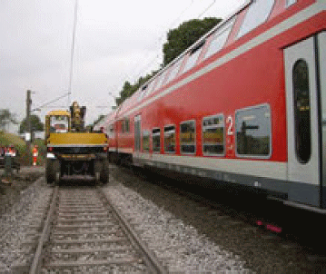
| Abb. 7-19: | Am eingegleisten Zweiwegebagger ist die Schwenkbegrenzung und unter Fahrleitung auch die Hubbegrenzung in Betrieb zu nehmen. |
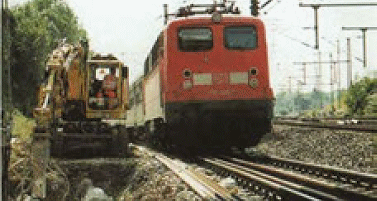
| Abb. 7-20: | Zweiwegebagger auf Mobilfahrwerk neben Betriebsgleis. |
Wird auf der Baustelle ein automatisches Warnsystem eingesetzt, müssen bei der Anzeige der Arbeiten an die BzS auch die Störschallpegel des Zweiwegebaggers und weiterer störschallerzeugender Maschinen (z. B. Trennschleifer bis zu 114 dB(A)) vom Unternehmer genannt werden, damit sie in die Projektierung des automatischen Warnsystems einfließen können (DB: als Angabe auf Seite 1 des Sicherungsplans).
Um zu gewährleisten, dass die Warnsignale den Maschinenführer und die Kolonne im Nahbereich des Baggers erreichen, kann z. B. auf der Maschine ein funkangesteuerter Signalgeber angeordnet werden, der in das kollektive automatische Warnsystem eingebunden ist. Diese Systeme werden von den Herstellern automatischer Warnsysteme bereits angeboten, Abb. 7-21. Die Wahrnehmbarkeitsprobe zu Schichtbeginn ist immer erforderlich.
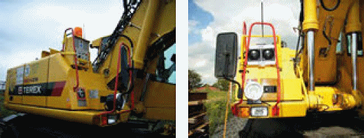
| Abb. 7-21: | Mobile funkangesteuerte Signalgeber auf Zweiwegebaggern (Testeinsatz für akustische Messungen). |
Soll ein Zweiwegebagger unter einer Fahrleitung eingesetzt werden, muss zunächst grundsätzlich geprüft werden, ob diese ausgeschaltet werden kann. Nur wenn dies im Ausnahmefall nicht möglich ist, darf mit dem Bagger bei besonderen Sicherheitsmaßnahmen unter der eingeschalteten Fahrleitung gearbeitet werden. Voraussetzung ist, dass auch durch unbeabsichtigtes Fehlverhalten nicht die Gefahr besteht, dass der Mindestschutzabstand zu unter Spannung stehenden Teilen der Fahrleitungsanlage unterschritten wird. Die örtliche Fahrleitungshöhe über Schienenoberkante muss auf der Baustelle bekannt sein. Bereiche mit abgesenkter Fahrleitung sind zu berücksichtigen.
Wenn der Bagger über das Schienenfahrwerk oder über das am Erdungsbolzen des Unterwagens angeschlossene Erdungsseil bahngeerdet und die Hubbegrenzung in Betrieb genommen ist, beträgt der Mindestschutzabstand zur Fahrleitung bei 15.000 V Wechselspannung (DB) 0,3 m, vgl. Kap. 4.2. Bei der Einstellung der Hubbegrenzung muss ein Abstandszuschlag (gemäß Ril 824.0106 [29]: zusätzlich 0,3 m) berücksichtigt werden, damit der Mindestwert von 0,3 m auch durch Federwege, durch die Elastizität der Konstruktion und durch Wippbewegungen des Zweiwegebaggers (z. B. beim Absetzen einer Last) keinesfalls unterschritten wird. Bei anderen Bahnbetreibern können andere Schutzabstände festgelegt sein. Die Bau- und Ausrüstungsanforderungen wie z. B. Hubbegrenzung, Erdungsbolzen, Erdungsseil sind den Vorgaben der Bahnbetreiber zu entnehmen, vgl. z. B. [32].
Wird das Erdungsseil (Schlepperde) eingesetzt, darf der Arbeitseinsatz des Baggers nur wenige Meter Fahrweg erfordern. Die begrenzte Bewegungsfreiheit des Baggers muss dann schon bei der Arbeitsvorbereitung berücksichtigt werden.
Die Einstellung der Hubbegrenzung (Abb. 7-22) muss die geringste Fahrleitungshöhe im Arbeitsbereich und das am Bagger montierte Arbeitswerkzeug berücksichtigen. Vor dem Einsatz unter der Fahrleitung sollte die richtige Einstellung der Hubbegrenzung durch einen Probehub außerhalb des Gleisbereiches überprüft werden. Der Aufsichtführende sollte den Zweiwegebaggerfahrern durch Überprüfung der Inbetriebnahme der Hubbegrenzung immer wieder klarmachen, welche Bedeutung diese Sicherheitseinrichtung beim Einsatz unter einer Fahrleitung hat.
Bei Ladearbeiten mit dem Zweiwegebagger unter eingeschalteter Fahrleitung bestehen weitere besondere Gefährdungen: z. B. ist beim Abladen von Schwellen vom Flachwagen damit zu rechnen, dass die Beschäftigten die Schwellenstapel zum Anschlagen besteigen. Der erforderliche Mindestschutzabstand zur unter Spannung stehenden Fahrleitung (1,5 m) wäre dabei jedoch unterschritten (bei z. B. 4,95 m Fahrleitungshöhe darf die Standhöhe maximal 1,45 m über Schienenoberkante liegen). Die Wagenbodenhöhe von Flachwagen liegt etwa bei 1,2 m über Schienenoberkante (Kopf- und Seitenrampenhöhe).
Bei der Planung des Zweiwegebagger-Einsatzes muss berücksichtigt werden, dass die Bahnerdung verloren geht, wenn der eingegleiste Bagger die Schienen verlässt (Abb. 7-23). Wird der Bagger im unebenen Gelände verfahren, neigt sich mit dem Unterwagen auch die Bezugsebene der Hubbegrenzung. Wird der Oberwagen in der Situation in Abb. 7-24 um 180° gedreht, kann der zuvor durch die richtig eingestellte Hubbegrenzung sicher eingehaltene Schutzabstand zur Fahrleitung leicht unterschritten werden. Auch das Ausheben des Unterwagens zum Passieren eines Indusi- Gleismagneten verringert den Abstand des Baggers zur Fahrleitung.
Bei der DB sind bei Einsatz von Baumaschinen unter der Oberleitung 15 kV die Sicherheitsmaßnahmen nach Ril 824.0106 [29] zwingend einzuhalten.
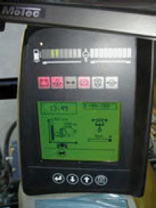
| Abb. 7-22: | Display für Hub- und Schwenkbegrenzung am Zweiwegebagger. |
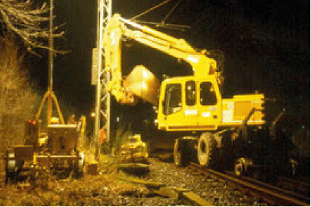
| Abb. 7-23: | Beim Verlassen der Schienen geht die Bahnerdung verloren. |
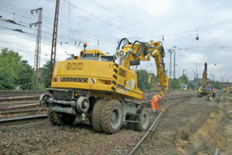
| Abb. 7-24: | Bei unebenem Gelände kann der Schutzabstand zur Fahrleitung durch die Längsneigung des Unterwagens unterschritten werden. Warnkleidung ist geschlossen zu tragen. |